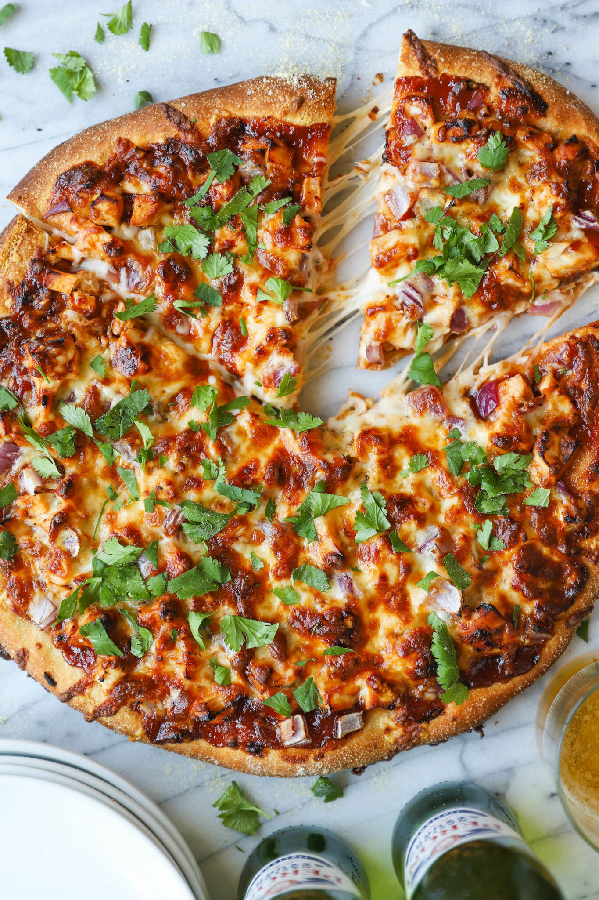

Pizza

Description
Ingredients
- 2 tablespoons olive oil
- 1/4 cup yellow cornmeal
- 1 pound pizza dough
- 2 cups shredded rotisserie chicken
- 1 cup shredded smoked cheddar cheese
- 1/2 cup diced red onion
- 3 tablespoons chopped fresh cilantro leaves
Steps
- Preheat oven to 450 degrees F. Lightly coat a baking sheet or pizza pan with olive oil.
- Working on a surface that has been sprinkled with cornmeal, roll out the pizza into a 12-inch-diameter round. Transfer to prepared baking sheet or pizza pan.
- Using a small ladle, spread bbq sauce over the surface of the dough in an even layer, leaving a 1/2-inch border.
- Top with chicken, cheeses and onion; season with salt and pepper, to taste.
- Place into oven and bake for 20-24 minutes, or until the crust is golden brown and the cheeses have melted.
- Serve immediately, garnished with cilantro, if desired.